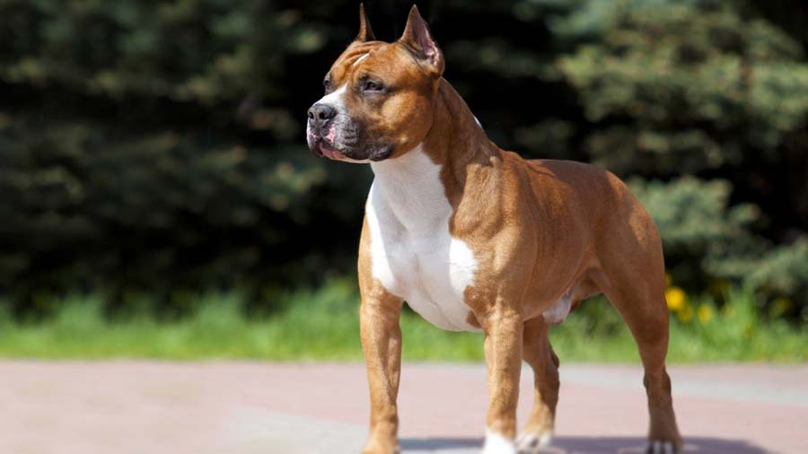
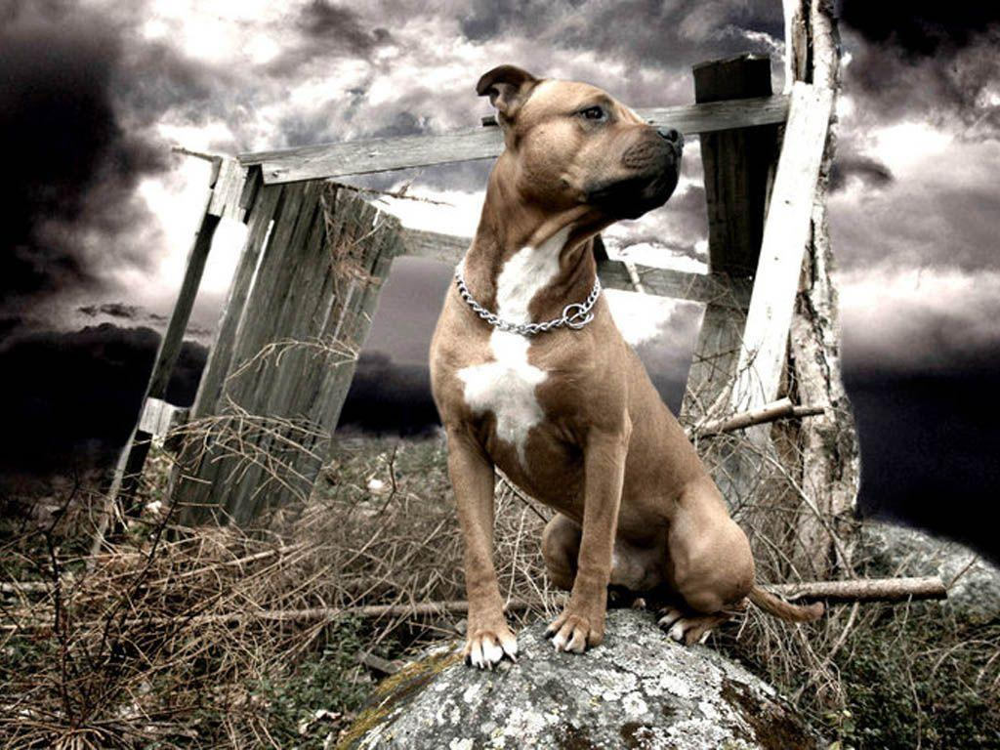
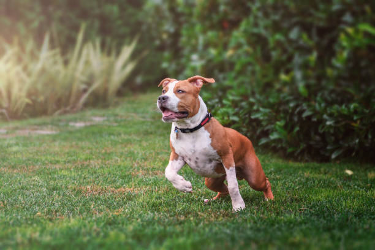
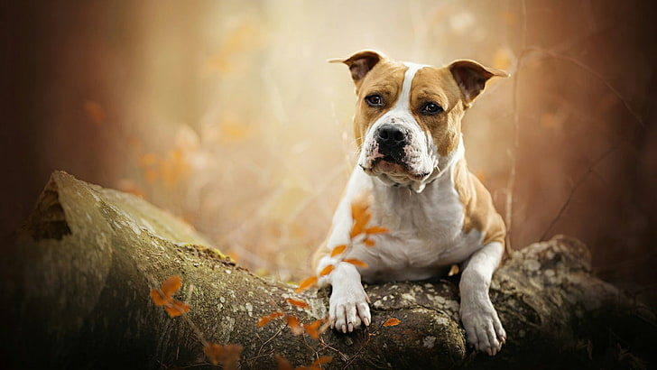

American Staffordshire Terrier

origin
United States
size
Medium
color
Others
type
Purebred
breed group
Terrier (AKC:1936)
character
Smartest
temperament
Attentive
Courageous
Friendly
Tenacious
height
17-19 inches (43-48 cm)
weight
57-67 pounds (25-30 kg)
geography
North America
overview
This stocky dog should be muscular, giving the impression not only of great strength for its size but also of grace and agility. Its gait is springy. Its low center of gravity helped it stay on its feet in a fight, and its nimbleness helped it avoid its opponent's teeth. Its own jaws are strong with great power. Its coat is short, close and glossy.
history
The American Staffordshire Terrier derived from crossing Bulldogs with an older Terrier line. They are closely related to the American Pit Bull Terrier, from whom they were bred apart in the 1960’s. The American breed was reared largely for illegal dog fighting (the ‘Pit’ in Pit Bull likely derives from fighting pits) in the United States and was recognized as a distinct breed in 1936.
American Staffordshire Terriers became popular with ranchers and farmers for protection, companionship, and catching hogs and cattle. Despite its media reputation for ferociousness, the American Staffordshire Terrier is an affectionate dog which has risen to popularity as a pet. The American Staffordshire Terrier’s natural aggression is directed toward other dogs, not humans, and even this can be overcome with training. They often serve as search dogs or police dogs. Popsicle, a drug sniffing American Staffordshire Terrier, became famous for sniffing out and locating one of the largest cocaine busts in the history of the FDA.
Photo Gallery


